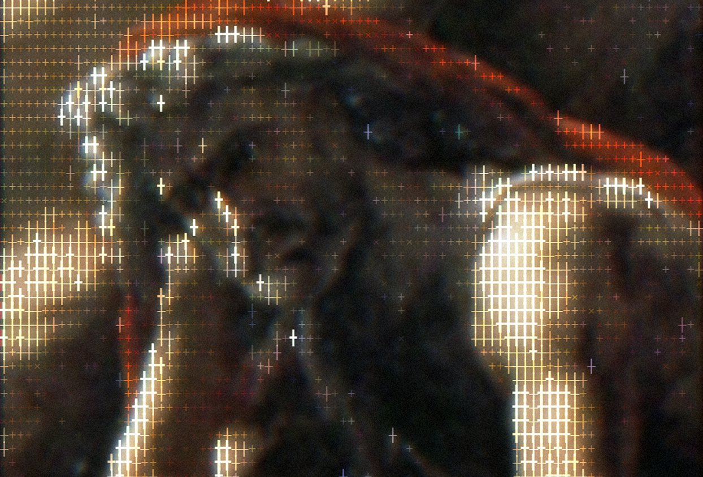

hello,
I'm Adam
with
four4s
four4s
Over the last several centuries I created hundreds of paintings across multiple movements to broaden my horizons as a brand strategist & visual designer including Romanticism, Neoclassicism, etc.
And so I built this website to share my collection. Some of the pieces may appear under different names in museums or art history books. This is mostly administrative. Pay no mind. Enjoy.